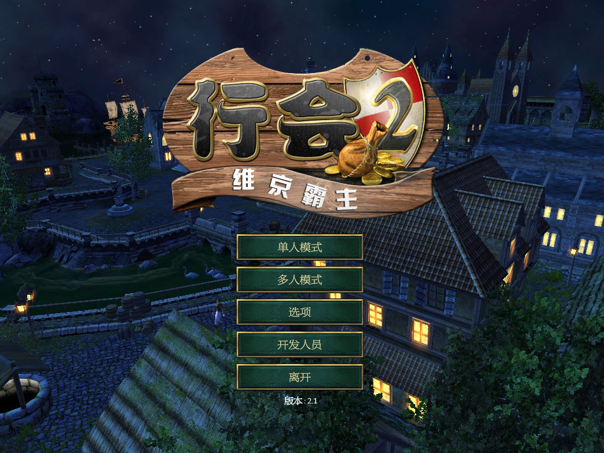
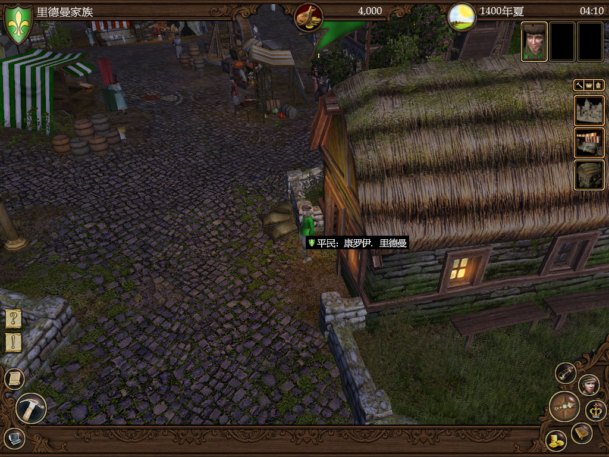

名稱：理想人生2／行會2：維京霸主 (The Guild 2: Pirates of the European Seas，簡中／英文版)
簡介：4HEAD 2007年出品的生活模擬經營遊戲，兼具角色扮演與即時戰略的元素，由JoWooD
代理發行，為「理想人生2」的獨立資料片 [待補]。


保護：英文版為光碟SecuROM 7.32，需使用YASU屏蔽工具，或由外界掛載再對應至虛擬機中。
檔案：minicdx1.rar = 獨立資料片1維京霸主最小光碟檢驗檔
nocdx1e20.rar = 獨立資料片1維京霸主英文2.0免光碟檔（2.1版不適用）
TG2POTESPatch21.rar = 獨立資料片1維京霸主2.1更新檔
TG2POTES_CHS.rar = 獨立資料片1維京霸主簡中漢化檔（適用2.0與2.1）